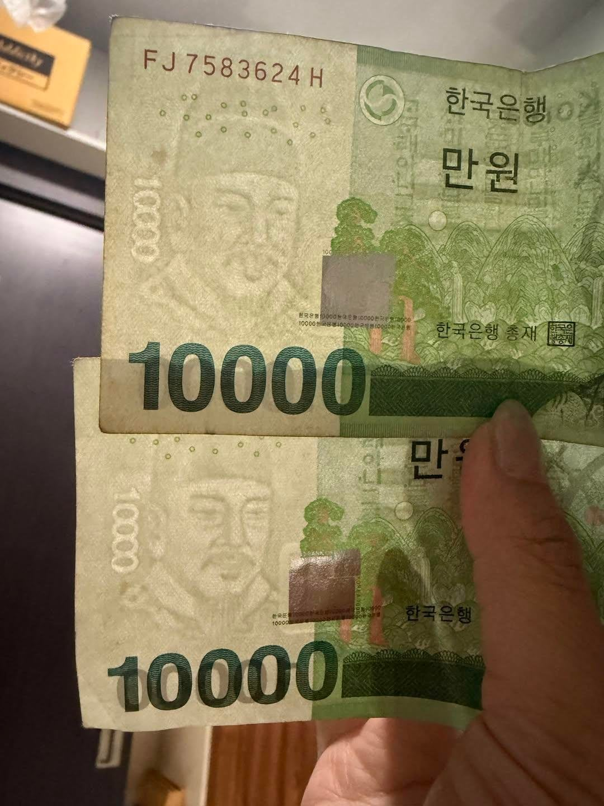

세종대왕이 메롱함

세종대왕이 메롱함
이제 위변조 숨은그림도 복제하네 ㅋㅋㅋ
메롱도 그렇고, 팔자주름도 더 길게 뻣어있음 ㄷㄷ
거울보고 메롱하니까 팔자주름 길어짐ㄷㄷ
은박지 반짝이 아닌거 보니까 위조 맞나보다
돈 글자 굵기가 다르네 와 ㅆㅂ 그냥 대충보면 모르겠다
과나같네 ㅋㅋㅋ
가게에서 슥 보면 모를듯 ㄷㄷ
재질도 비슷한거같고 언뜻보면 진짜 모르겠네;
저렇게 메롱으로 약올릴 수준이면 이미 원본이랑 같은 것도 만들 기술이 있다는거네...
이미 상당량 유통되고 있겠지?
와 시발
가짜 돈 자체도 꽤나 오래된거 같은데
메롱 넣을 정도면 똑같이 복사는 일도 아닌 거 아녀 ㄷㄷ
지폐 자체가 이미 시중에 돌고 있는 사용감이 있네
근데 저거말고도 위변조 방지가 많아서.. 당장 옆에 홀로그램만봐도 티남
은행원도 속겠다
인쇄오류아닌가
중국은 위조지폐문제 심각해서 다 전자페이나 큐알쓰더라
저게 ai영상이 아니라는 전제하에 위조지폐는 아니고 누가 펜 터치로 장난한듯
쇼츠 타면 앞으로 저런 장난 유행하겠네
낙서한거면 지폐훼손으로 신고하면 되지않나 ㅋㅋ
지폐훼손죄는 없어 개붕쿤... 자기돈 자기가 태우겠다는데...
구10원짜리 녹여서 동인지 구리인지 모으던거 처벌받은거아님?
그거는 주화훼손죄. 종이는 해당안됨
그렇구나 주화는 동전만이구나 돈을 통틀어 말하는건줄
점진적으로 지폐 없애기 하고 있긴한데 지금보다는 좀 가속하면 싶긴함
일련번호 밑에 점들도 앞뒷면 위치 맞아야 하는데 다 다르네


이런건 빨리 오피셜로 확인해줘야하는거아냐?
지금 5만원권 위조지폐 검거사례가 20배 늘어났거든?
근데 진짜 아주 공요롭게 중국인무비자시점부터임
활동영역 옮겼나보네
힝 속았지
예전에 알바할때 만원짜리 위폐 몇번 잡아봄. 매장 마감하면 현금세는데 계수기로 한번 털고 손으로 한번 더 세거든. 사람 손 감각이 진짜 예민한게 수백장의 지폐를 손으로 넘기다보면 위폐는 감촉이 딱 다름. 보기엔 비슷해도 진짜들 사이에 있으면 걸림. 근데 위폐나와도 신고 안하더라 사장님이 그거 조사받는게 더 피곤하대.
요샌 지폐 거의 안 쓰니까 무조건 속을듯 ㅋㅋ
메롱하는 위조지폐를 만들 이유가 없잖아
진품 맞는거 같고 수염부분이 뭉게진거 같음
숨은그림은 인쇄단계가 아니라 용지 제조단계에서 들어가는거라 섬유 뭉침 등 여러 이유로 저렇게 보일수 있음
그림을 살짝씩 다르게 뽑는다고 들었던 것 같은데 아닌가?ㄷㄷ
메롱메롱
위조 지폐 만들때 일부로 살짝 다르게 만듦
근데 지폐 만들기가 생각보다 어려워서 위조지폐는 실제로 보면 티 많이 남
헐?